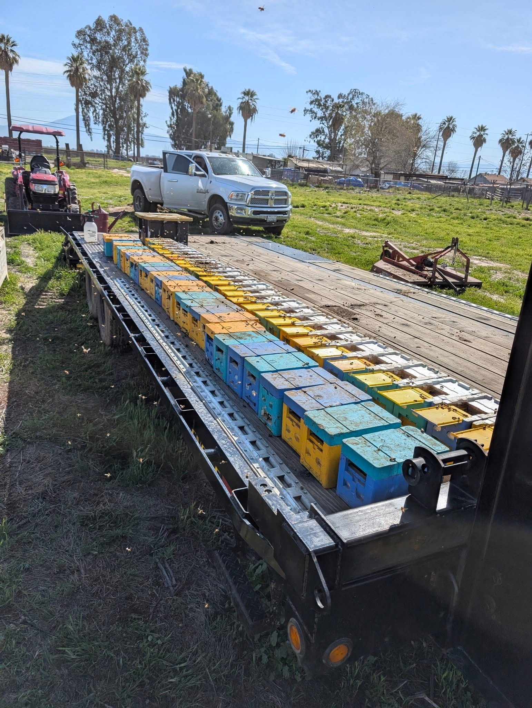

Local Tehachapi Honey

Newsom Honey Farms At Newsom Honey Farms, we take pride in providing high-quality, locally produced honey from the beautiful mountain community of Tehachapi, California. While most of our honey is harvested and processe[...] Our honey is available in a variety of sizes, ranging from 1-pound jars to 40-pound containers, and we also offer pure beeswax products. Samples are available so you can experience the quality for you[...] Honey makes a thoughtful gift, welcome basket addition, or everyday pantry staple.
In addition to its delicious natural flavor, honey has long been valued for its potential benefits, including soothing sore throats and supporting skin health. Our honey is raw, pure, and free from ad[...] One of the remarkable qualities of pure honey is its exceptionally long shelf life. Unlike many foods, properly stored honey does not expire. What sets Newsom Honey Farms apart is our commitment to quality and transparency. Our honey is harvested, processed, packaged, and sold by the same dedicated beekeeper. We know exactly where our honey[...] Taste the difference that comes from local care, craftsmanship, and a passion for beekeeping.